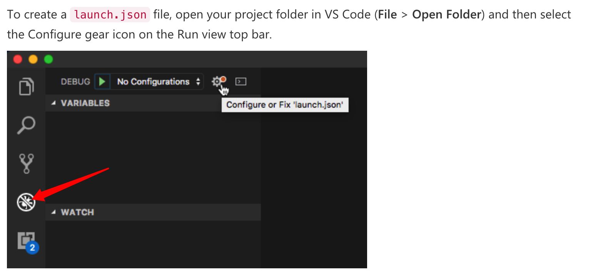
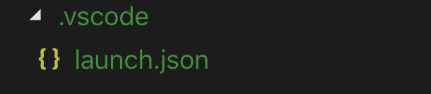
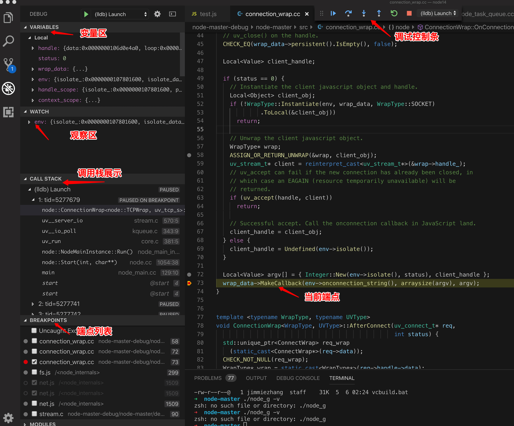

声明，本文特指使用vscode,调试nodejs native模块，比如/src/connection_wrap.cc代码。业务js代码调试，可参见nodejs官网调试。
打开github上的仓库（https://github.com/nodejs/node， 克隆到本地
git clone https://github.com/nodejs/node.git本文以macos为例。
编译前需要安装：（详见build工具）
在刚才clone的node路径下，执行以下两个命令（耗时较长，大概需要10-30分钟）。
编译好后，会在当前目录下，新增一个out目录，编译后的node存放在out/Release/node。
在当前目录下，执行一下命令
out/Release/node -v如果能正确显示node的版本，那么证明nodejs编译成功。
用vscode打开刚才的node目录, 添加launch.json文件。方式如下： 
vscode会在当前目录下，生成一个launch.json文件。 
打开该文件，按照以下格式填写
{
// Use IntelliSense to learn about possible attributes.
// Hover to view descriptions of existing attributes.
// For more information, visit: https://go.microsoft.com/fwlink/?linkid=830387
"version": "0.2.0",
"configurations": [
{
"name": "(lldb) Launch",
"type": "lldb",
"request": "launch",
"program": "{workspace}/out/Release/node", // 请填写绝对路径
"args": [
"--expose-internals",
"{workspace}/test.js" // 建议填写绝对路径，告诉vscode启动文件
],
"stopAtEntry": false,
"cwd": "{workspace}/out/Release/", // 请填写绝对路径
"environment": [],
"externalConsole": true,
"MIMode": "lldb"
}
]
}然后新增一个test.js文件，用于调试，你可以直接用下面的内容：
const net = require('net');
// 2.创建一个服务
const server = net.createServer((c) => {
// 'connection' listener.
console.log('client connected');
c.on('end', () => {
console.log('end');
});
c.on('data', () => {
console.log('data event');
c.write('HTTP/1.1 200 OK\r\n');
c.write('Connection: keep-alive\r\n');
c.write('Content-Length: 12\r\n');
c.write('\r\n');
c.write('hello world!');
})
});
server.on('error', (err) => {
throw err;
});
// 3.监听端口
server.listen(9090, () => {
console.log('server bound');
});一切准备就绪，点击vscode顶部的 “Debug->Start Debugging(F5)”, vscode自动启动debug面板。
你可以在vscode中打开一个文件，比如connection_wrap.cc, 用鼠标加一个端点。
然后用浏览器访问http://localhost:9090/, vscode会自动将程序停止在端点处。
